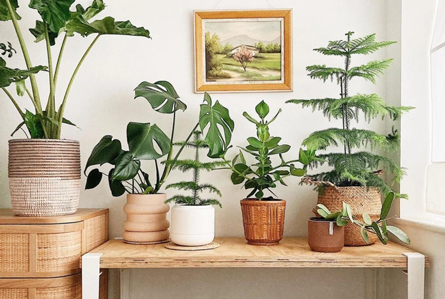
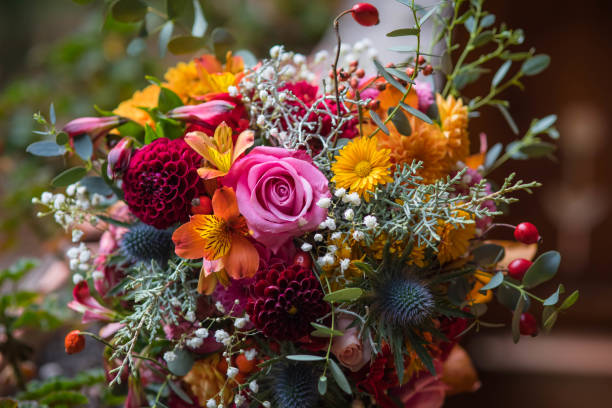

Nos Créations


Décoration intérieure
En savoir plus

Votre bouquet
En savoir plusBouquet Romantique
Ce bouquet est composé de roses rouges soigneusement sélectionnées pour être offert à une personne qui vous est chère.
Décoration intérieure
Vous ne savez pas comment décorer votre intérieur, ou simplement le rendre plus accueillant, plus frais ou plus végétal ?
Votre bouquet
Vous pourrez créer votre propre bouquet selon vos goûts et vos couleurs, pour vous ou pour l'offrir à un de vos proches.
Nous contacter
📍 Rue des Fleurs 20, 1950 Sion
📞 027 999 99 99
📧 exemple@fleuriste.ch